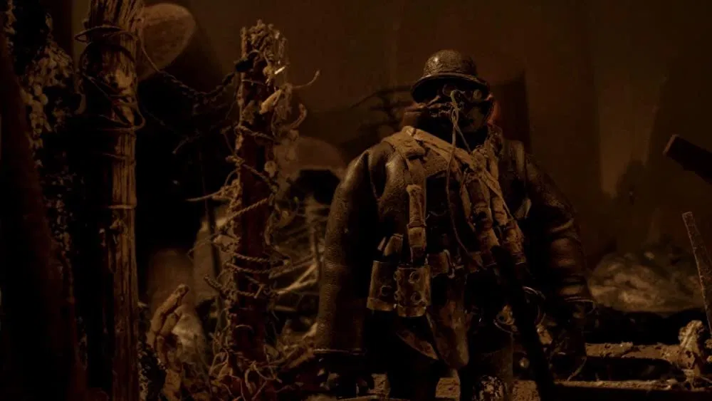
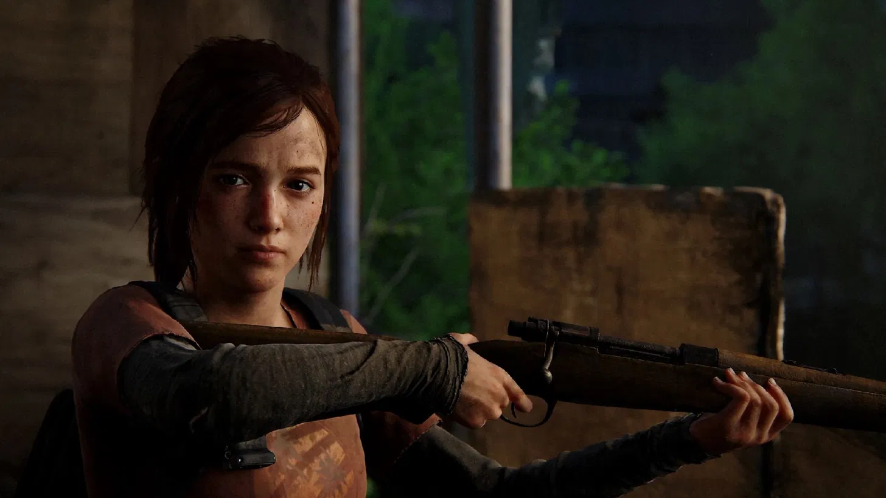
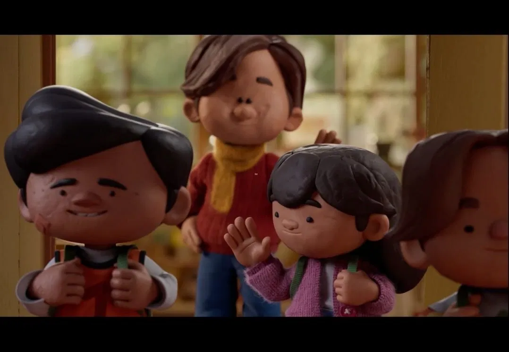

Demo is a gothic survival adventure game where players control a teacher faced the horrors of the invasion. Inspired by the style and atmosphere of The Midnight Walk and the tense survival gameplay of the Little nightmares games. players must endure the horror of the invasion (yes, war), think fast, As she journeys deeper into the nightmare, she must confront loss, fear, and the darkness that threathens to consume everything.





The demo's job is not to sell the game. It is to make the player understand what they are agreeing to before they start it.
Why Clara, not Kita
If the demo protagonist were Kita, the player would know she survives she's the main character. That safety would remove every threat in the demo. Clara has no such protection. The player builds a relationship with her in twenty minutes and the game ends it without asking permission. She will appear as an empty house in the main game's opening chapter. The player will recognize it. They will not need to be told what happened there.
Clara is Kita's neighbor not a blood relation, a village teacher, the teacher every likes. Kita passes her empty house in the end of Act I. The empty house does not explain itself. The player already carries the explanation.
The demo has two main characters. everybody in this demo is distinct enough to remember their name. if the players can remember everyone just from their voice or look, the weight of the story is much greator much more effective, where the death is in literal every corner, the question remains, what will happened to the main 2 characters.
The demo does not leave the school grounds. What changes is Clara's relationship to the building from belonging, to surviving, to being the last thing left inside it.
cut to the school flags ceremony we watch the whole ceremony in its entirety. the sun is shining full of hope.
after seeing her sister she sneaks back successfuly avoiding the principal
a chase now occurs clara needs to outsmart the creature, clara needs to pull a pillar so the ceiling could fall over the creature, now the fires spreads
The game mixes the gameplay of Little nightmares and use the fixed cameras of silent hill games but dynamic enough to make its own feel.
this mechanics are still to think about, they're not concrete. but in the demo, the mechanics needs to be limited due to scope of the game
The entire demo exists inside one school building and its immediate yard. This is not a scope compromise it is a deliberate choice that makes the horror intimate. There is no outside world to run to. The building that was safe becomes the building that is killing her, and the player never leaves it.

The hallway is the same corridor traversed twice from different heights. The crawl sequence requires no new geometry same walls, same floor, different camera angle and smoke particle overlay. Classroom B requires a single interior visible only through a doorway. The yard is a single exterior establishing shot with a fire particle system. Every major emotional beat is achieved through camera angle, lighting, and sound design rather than new geometry.
The Final Frame
The camera turns back to the school while Clara walks toward the something. The building burns. The orange light from the sunset the same color, the same total warmth is back, and it is from the fire now. The demo ends on that image because it is the only honest ending
No continue prompt. No chapter select. The main menu loads. The player sits with it.